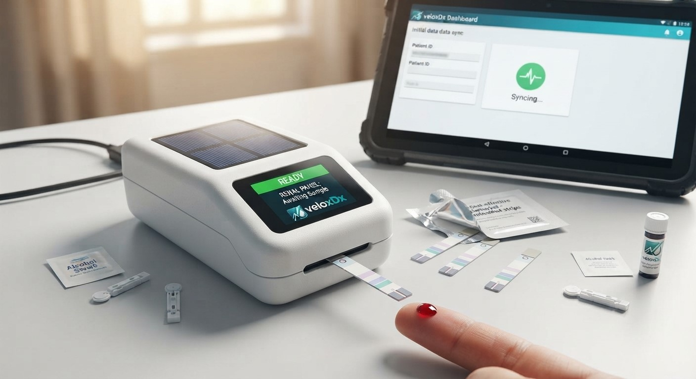

Engineered for extreme reliability, VeloxDx delivers life-saving test results from a single drop of blood in minutes. >Bridging the critical gap in Northern Nigeria, our platform enpowered rural clinics and PHCs with solar-powered capabilities.
By integrating advanced Point-of-Care biomarker strips with automated data synchronization, field clinicians bypass traditional laboratory delays.
"veloxDx transformed our mobile outreach capacity—we can now screen, diagnose, and sync patient records on the spot during remote community visits." — Partner Healthcare Center, Northern Region

Compare our solar-powered point-of-care tiers design for various healthcare settings across Northern Nigeria
| Kit Name | Test Included | Throughput | Power Source |
|---|---|---|---|
| Mobile Outreach Pack | Renal Panel (Creatinine, BUN, Electrolytes) | 15 tests/day | Solar / Battery |
| Rural Clinic Hub | Hepatic & Renal Panels (Full Screening) | 35 tests/day | Solar Primary + Grid Backup |
| Field Research Unit | Advanced Multi-Marker Assays | 50+ tests/day | Solar with High-Capacity Storage |
| *All kits include automated data synchronization to state health dashboards. | |||